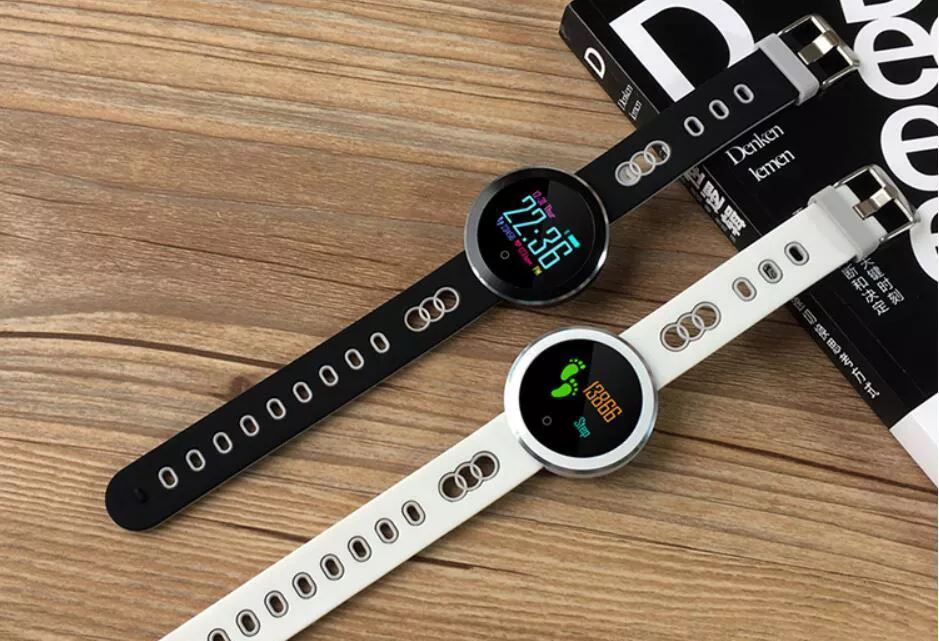
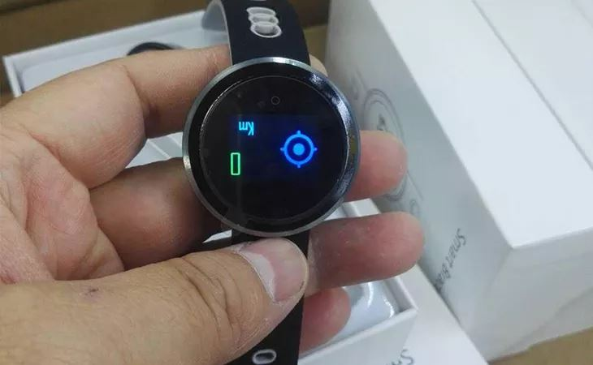
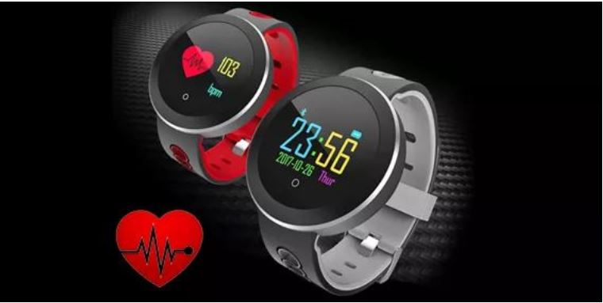
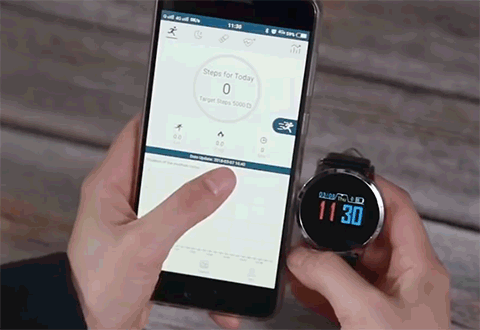

New HealthWatch to Monitor Health Replaces Expensive Sports
Watches
| Tech Gadgets | by John Miller

If you've never had a HealthWatch before, this is THE watch for
you!
A few weeks ago, we celebrated the launch of a new HealthWatch on
the market, and it is cheaper and easier to use than the previous
ones.
This is not an ordinary HealthWatch , it is equipped with the
latest technologies. It allows to obtain the same results as a
watch of £ 350.
Why this HealthWatch saves lives?

It is now well known that heart disease and other health problems
are increasing because of our modern lifestyle. The main reason
for these diseases is the lack of regular physical exercise by
many people. According to the WHO (World Health Organization), a
person already suffers from a lack of physical activity if they
travel less than 90 minutes a day. And what about You? Are you one
of those people who do not move enough?
In addition to the effects of a sedentary lifestyle, heart disease
and other medical problems are also favored by unhealthy diets,
work-related stress and the worries of daily life. More and more
people are neglecting their health and choosing not to do physical
activity; only a healthy lifestyle ensures emotional balance and
daily well-being!
For those of us who do not move enough and who do not perform
useful routine medical exams, this health-centric connected watch
is invaluable. It is a smartwatch that measures all the vital
data: a real medical assistant on your wrist.
That's why this smartwatch is also one of the best-selling
smartwatches in the world. Everyone wants to do something for
their health, which is why it sells like hotcakes.
What is it about?
This is the new
HealthWatch
and it's now availible in the UK!

The HealthWatch was developed by a team of experts who wanted to
create a high-quality watch with health data sensors that could be
bought by anyone, but was also extremely durable and had enough
battery. They also wanted to make its handling so easy that even
people with little technical knowledge could use it.
For that, they had to imagine this HealthWatch from scratch; and
the result of all this research and development is quite amazing.
How does it work? What can she do?
-
It measures your blood pressure, your pulse, and your oxygen
level in the blood.
- Ultrasonic OLED display.
-
Measure your daily movements. The HealthWatch is the perfect
solution for anyone who wants to track their physical activity
and calories burned daily.
-
Extremely durable and resistant material. The Healthwatch is
waterproof (IP67 certified) and extremely weather resistant.
-
Answer the phone with the HealthWatch. No need to search for
your phone in your pocket or bag.
-
Very long life of the battery, no need to recharge every day. In
standby, it lasts up to 150 days!
-
Monitor your sleep phases to determine whether you are sleeping
deeply, whether your sleep is light or whether you are always on
the alert, ready to wake up.
This HealthWatch is for everyone - whether you're young, active,
or you do not have the time to exercise daily: The HealthWatch
tracks all vital health data and analyzes your health.
The HealthWatch also determines oxygen saturation completely
painlessly using light sensors. Oxygen saturation is an important
parameter for assessing respiratory function. In many cases, it
allows conclusions to be drawn about the functioning and activity
of the lungs
Why do you have to buy this watch?

Think of the ease with which you could take a little more care of
your health. Thanks to her, you will always have a precise idea of
your state of health and you will be able to carry out all your
activities with peace of mind.
How can I get the HealthWatch?
-
Step 1: Order HealthWatch
from the official site
-
Step 2: Place the HealthWatch
on your wrist
-
Step 3: From now on, you are
informed of your state of health permanently and can act on
your health if necessary
It's that simple !
P.S. you can get this
innovative HealthWatch for huge discount on a multi-buy deal
plus free shipping today
available right here
!
PROMOTION: Now with 50% off and
with free shipping for a limited time!
CLICK TO CHECK THE AVAILABILITY »